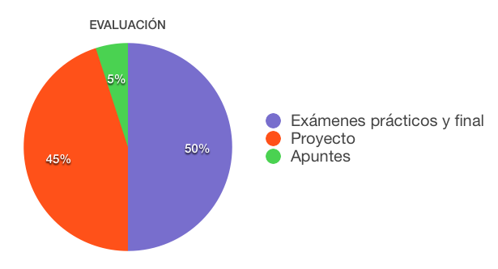

Actividades de
aprendizaje:
Actividades de
aprendizaje:|
TC 1028. Pensamiento Computacional para Ingeniería . |
Plan de evaluación
Para tu evaluación se considerarán los siguientes elementos:

Actividades de
aprendizaje:
•
Son todas las
actividades que realizarás, algunas podrán tener impacto en tu calificación
final y otras no, sin embargo, todas contribuirán al desarrollo de las
competencias establecidas para la materia.
•
Esta
materia se evalúa a través de diferentes competencias. Para desarrollar
estas competencias se llevarán a cabo laboratorios, exámenes de tema y un
proyecto que se desarrolla a lo largo del semestre.
•
Cada alumno tendrá una
rúbrica en la que se van a ir registrando las competencias que se van
desarrollando durante el semestre.
Contenidos
Para desarrollar las subcompetencias, alcanzar los niveles de dominio, y responder a las situaciones problema planteadas en esta materia, es necesario aprender diferentes conceptos, teorías, procedimientos, técnicas, actitudes y valores, entre otros contenidos.
1. Introducción a la solución de problemas mediante programación.
1.1 Uso de programas para la solución de problemas.
1.2 Fases de desarrollo de un programa.
1.3 Lenguajes de programación.
1.3.1 Interpretación y compilación.
1.4 Ambientes de programación.
2. Pensamiento computacional en problemas que involucran cálculos.
2.1 Estructura básica de un programa.
2.2 Variables, constantes y tipos de datos.
2.3 Expresiones con operadores aritméticos para describir fórmulas.
2.4 Construcción de programas que utilicen funciones predefinidas.
2.5 Solución de problemas que requieran el uso de fórmulas matemáticas.
3. Pensamiento computacional en programas que involucren programación
modular.
3.1 Programación modular.
3.2 Construcción de funciones y métodos que requieren cálculos matemáticos.
3.3 Solución de problemas que involucren programación modular.
4. Depuración de programas.
4.1 Pruebas y depuración.
4.2 Prueba de caja negra.
5. Pensamiento computacional en problemas que requieran estructuras de
decisión.
5.1 Expresiones con operadores relacionales y lógicos para definir
condiciones.
5.2 Estatutos de decisión para programación con condiciones.
5.3 Solución de problemas que involucren estatutos condicionales.
6. Pensamiento computacional en problemas que requieran repeticiones.
6.1 Estatutos de repetición para programación iterativa.
6.2 Solución de problemas que involucren programación con estatutos de
repetición.
7. Pensamiento computacional en problemas con datos estructurados.
7.1 Datos estructurados.
7.1.1 Listas.
7.1.2 Matrices.
7.1.3 Strings.
7.2 Mutabilidad e inmutabilidad.
7.3 Solución de problemas que involucren datos estructurados.
8. Pensamiento computacional en problemas que involucran archivos.
8.1 Creación y uso de archivos.
8.2 Solución de problemas que involucren programación con archivos.
Diseña y desarrolla programas computacionales que permiten comprobar el funcionamiento de fenómenos naturales.
Identifica los principales elementos de la problemática.
Realiza una abstracción de los elementos con el fin de diseñar las estructuras que mejor representen al problema.
Codifica soluciones en lenguajes de programación de alto nivel.
Realiza propuestas de solución aplicando normas y estándares.
Aprecia la necesidad de un análisis sistemático de una situación problemática con la finalidad de identificar adecuadamente los factores que dan origen a las desviaciones observadas.
Valora la utilización de un vocabulario preciso en el ámbito de aplicación de estándares y normas.
.
|
© 2019 Escuela de Computación y Mecatrónica . |